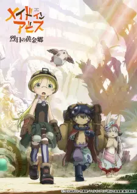

MyAnimeList, sering disingkat MAL, adalah situs jejaring sosial dan situs katalogisasi sosial menyangkut anime dan manga. Situs ini menyediakan sistem yang berupa daftar untuk mengatur dan menilai suatu anime dan manga. Hal memudahkan dalam menemukan pengguna dengan selera yang sama dan menyediakan database yang besar tentang anime dan manga. Pada tahun 2018, situs ini dikabarkan telah memiliki kira-kira 15.000 entri anime dan 45.000 entri manga. Pada tahun 2015, situs ini menerima 120 juta pengunjung per bulan.
| Overlord IV | Spy X Family Part 2 | Lycoris Recoil | Made in Abyss : The Golden City of the Scorching Sun |
|---|---|---|---|
|
 |